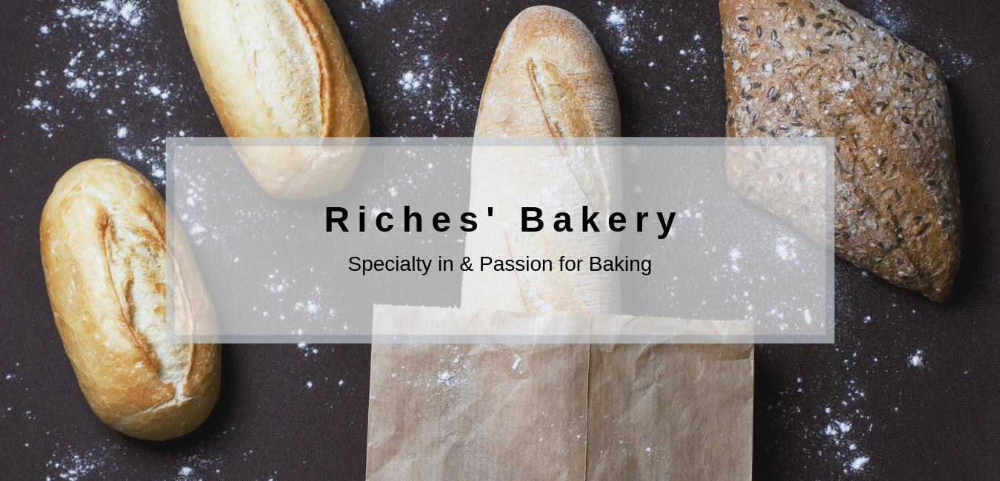

Anderson Annylusse Riche
Projects
Digital Flyer
Hi! This was an “Admission challenge” from the boot camp that I was learning where I used Canva. It was my very first thing on Canva. I was asked to make a digital flyer for a project. Since I like eating pastries stuffs - “kidding” – I chose to make one for a bakery. I like images of foods and fruits. It was my very first one project. I got some interesting feedback from my instructor, like, I needed to put more pictures that are related to a bakery. This is true, because a bakery does not bake only donuts. I supposed to include some other pictures like cakes, muffins, pizzas, and so one.
Brochure
This was my third challenge. I greatly enjoyed doing this task. I had to make a brochure for a business. Again, I chose the same kinds of business, “A Bakery”. Here, I started to know more about doing things with Canva. I got important feedback from my instructor. So, if you have in mind to do a brochure for your business, don’t hesitate to contact me.
Business Card

Oh. I like doing business card for people. This one was asked by my instructor to do for the business that created the Digital flyer. I found that if the background images and the color were related to the previous exercise, it would be great. That is why I use a pastries image as background. I like creating things. That makes me feel that was created in the image of God. Check me for a Business card if ever you want to have one.
Website Banner
Video
In this video, I give you information about me, what I do. You have also the opportunity to see my works. I like working with different kinds of platforms. I include some Photoshop and Canva's projects. Please, be free to comments.